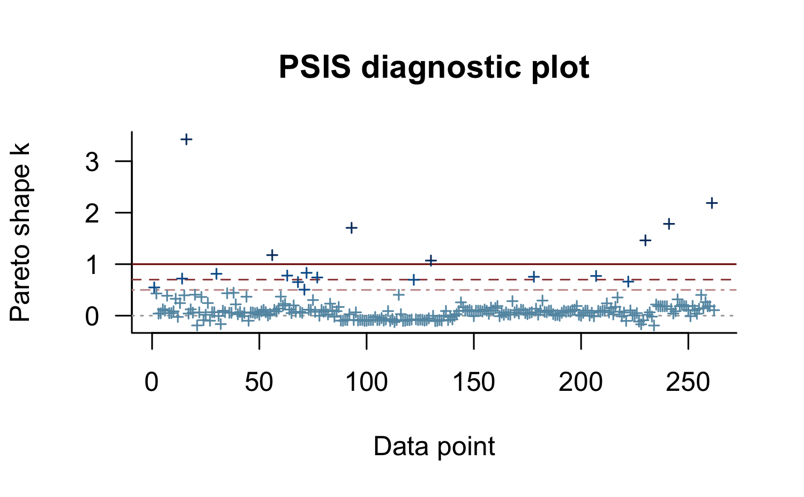
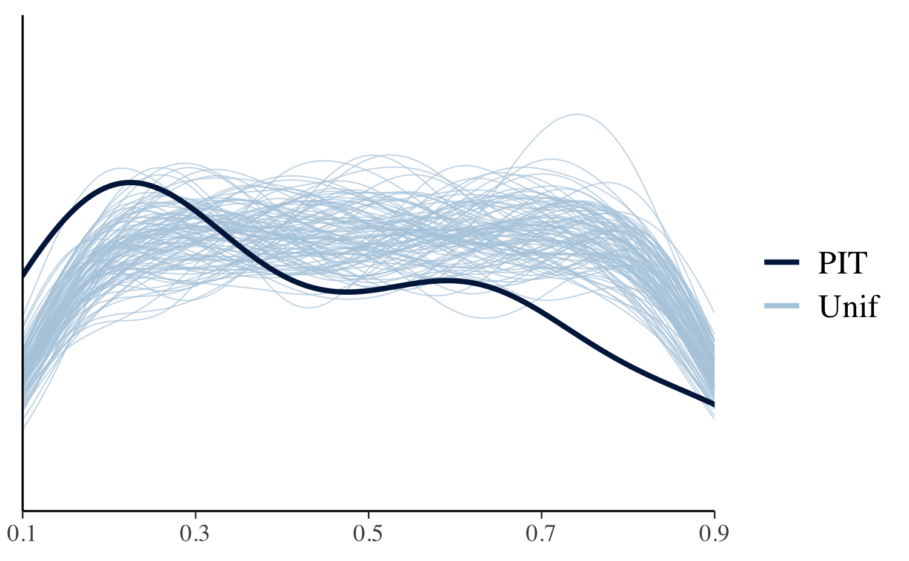
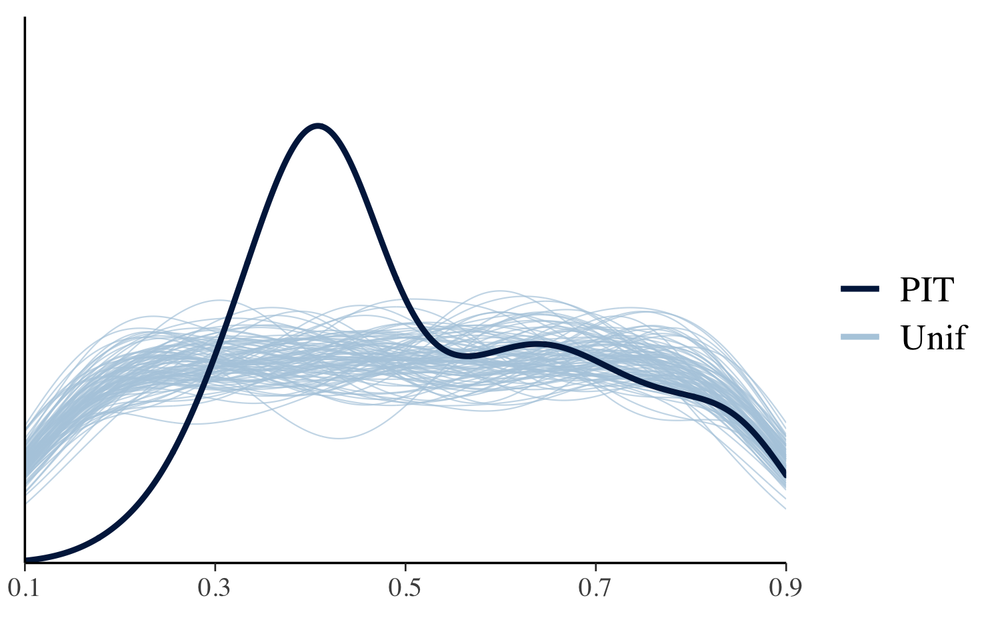

vignettes/loo2-example.Rmd
loo2-example.RmdThis vignette demonstrates how to use the loo package to carry out Pareto smoothed importance-sampling leave-one-out cross-validation (PSIS-LOO) for purposes of model checking and model comparison.
In this vignette we can’t provide all necessary background information on PSIS-LOO and its diagnostics (Pareto \(k\) and effective sample size), so we encourage readers to refer to the following papers for more details:
Vehtari, A., Gelman, A., and Gabry, J. (2017). Practical Bayesian model evaluation using leave-one-out cross-validation and WAIC. Statistics and Computing. 27(5), 1413–1432. :10.1007/s11222-016-9696-4. Links: published | arXiv preprint.
Vehtari, A., Simpson, D., Gelman, A., Yao, Y., and Gabry, J. (2019). Pareto smoothed importance sampling. arXiv preprint arXiv:1507.04544.
The Poisson and negative binomial regression models used below in our example, as well as the stan_glm function used to fit the models, are covered in more depth in the rstanarm vignette Estimating Generalized Linear Models for Count Data with rstanarm. In the rest of this vignette we will assume the reader is already familiar with these kinds of models.
The example data we’ll use comes from Chapter 8.3 of Gelman and Hill (2007). We want to make inferences about the efficacy of a certain pest management system at reducing the number of roaches in urban apartments. Here is how Gelman and Hill describe the experiment and data (pg. 161):
the treatment and control were applied to 160 and 104 apartments, respectively, and the outcome measurement \(y_i\) in each apartment \(i\) was the number of roaches caught in a set of traps. Different apartments had traps for different numbers of days
In addition to an intercept, the regression predictors for the model are roach1, the pre-treatment number of roaches (rescaled above to be in units of hundreds), the treatment indicator treatment, and a variable indicating whether the apartment is in a building restricted to elderly residents senior. Because the number of days for which the roach traps were used is not the same for all apartments in the sample, we use the offset argument to specify that log(exposure2) should be added to the linear predictor.
'data.frame': 262 obs. of 5 variables:
$ y : int 153 127 7 7 0 0 73 24 2 2 ...
$ roach1 : num 308 331.25 1.67 3 2 ...
$ treatment: int 1 1 1 1 1 1 1 1 0 0 ...
$ senior : int 0 0 0 0 0 0 0 0 0 0 ...
$ exposure2: num 0.8 0.6 1 1 1.14 ...# rescale to units of hundreds of roaches roaches$roach1 <- roaches$roach1 / 100
We’ll fit a simple Poisson regression model using the stan_glm function from the rstanarm package.
fit1 <- stan_glm( formula = y ~ roach1 + treatment + senior, offset = log(exposure2), data = roaches, family = poisson(link = "log"), prior = normal(0, 2.5, autoscale = TRUE), prior_intercept = normal(0, 5, autoscale = TRUE), seed = 12345 )
Usually we would also run posterior predictive checks as shown in the rstanarm vignette Estimating Generalized Linear Models for Count Data with rstanarm, but here we focus only on methods provided by the loo package.
Although cross-validation is mostly used for model comparison, it is also useful for model checking.
We start by computing PSIS-LOO with the loo function. Since we fit our model using rstanarm we can use the loo method for stanreg objects (fitted model objects from rstanarm), which doesn’t require us to first extract the pointwise log-likelihood values. If we had written our own Stan program instead of using rstanarm we would pass an array or matrix of log-likelihood values to the loo function (see, e.g. help("loo.array", package = "loo")). We’ll also use the argument save_psis = TRUE to save some intermediate results to be re-used later.
loo1 <- loo(fit1, save_psis = TRUE)
Warning: Found 14 observations with a pareto_k > 0.7. With this many problematic observations we recommend calling 'kfold' with argument 'K=10' to perform 10-fold cross-validation rather than LOO.loo gives us warnings about the Pareto diagnostics, which indicate that for some observations the leave-one-out posteriors are different enough from the full posterior that importance-sampling is not able to correct the difference. We can see more details by printing the loo object.
print(loo1)
Computed from 4000 by 262 log-likelihood matrix
Estimate SE
elpd_loo -6239.8 725.7
p_loo 283.6 70.2
looic 12479.6 1451.4
------
Monte Carlo SE of elpd_loo is NA.
Pareto k diagnostic values:
Count Pct. Min. n_eff
(-Inf, 0.5] (good) 243 92.7% 126
(0.5, 0.7] (ok) 5 1.9% 52
(0.7, 1] (bad) 7 2.7% 24
(1, Inf) (very bad) 7 2.7% 1
See help('pareto-k-diagnostic') for details.The table shows us a summary of Pareto \(k\) diagnostic, which is used to assess the reliability of the estimates. In addition to the proportion of leave-one-out folds with \(k\) values in different intervals, the minimum of the effective sample sizes in that category is shown to give idea why higher \(k\) values are bad. Since we have some \(k>1\), we are not able to compute an estimate for the Monte Carlo standard error (SE) of the expected log predictive density (elpd_loo) and NA is displayed. (Full details on the interpretation of the Pareto \(k\) diagnostics are available in the Vehtari, Gelman, and Gabry (2017) and Vehtari, Simpson, Gelman, Yao, and Gabry (2019) papers referenced at the top of this vignette.)
In this case the elpd_loo estimate should not be considered reliable. If we had a well-specified model we would expect the estimated effective number of parameters (p_loo) to be smaller than or similar to the total number of parameters in the model. Here p_loo is almost 300, which is about 70 times the total number of parameters in the model, indicating severe model misspecification.
Using the plot method on our loo1 object produces a plot of the \(k\) values (in the same order as the observations in the dataset used to fit the model) with horizontal lines corresponding to the same categories as in the printed output above.
plot(loo1)

This plot is useful to quickly see the distribution of \(k\) values, but it’s often also possible to see structure with respect to data ordering. In our case this is mild, but there seems to be a block of data that is somewhat easier to predict (indices around 90–150). Unfortunately even for these data points we see some high \(k\) values.
The loo package can be used in combination with the bayesplot package for leave-one-out cross-validation marginal posterior predictive checks Gabry et al (2018). LOO-PIT values are cumulative probabilities for \(y_i\) computed using the LOO marginal predictive distributions \(p(y_i|y_{-i})\). For a good model, the distribution of LOO-PIT values should be uniform. In the following plot the distribution (smoothed density estimate) of the LOO-PIT values for our model (thick curve) is compared to many independently generated samples (each the same size as our dataset) from the standard uniform distribution (thin curves).
yrep <- posterior_predict(fit1) ppc_loo_pit_overlay( y = roaches$y, yrep = yrep, lw = weights(loo1$psis_object) )

The excessive number of values close to 0 indicates that the model is under-dispersed compared to the data, and we should consider a model that allows for greater dispersion.
Here we will try negative binomial regression, which is commonly used for overdispersed count data.
Unlike the Poisson distribution, the negative binomial distribution allows the conditional mean and variance of \(y\) to differ.
fit2 <- update(fit1, family = neg_binomial_2)
loo2 <- loo(fit2, save_psis = TRUE, cores = 2)
Warning: Found 1 observation(s) with a pareto_k > 0.7. We recommend calling 'loo' again with argument 'k_threshold = 0.7' in order to calculate the ELPD without the assumption that these observations are negligible. This will refit the model 1 times to compute the ELPDs for the problematic observations directly.print(loo2)
Computed from 4000 by 262 log-likelihood matrix
Estimate SE
elpd_loo -895.9 37.8
p_loo 6.9 2.8
looic 1791.7 75.6
------
Monte Carlo SE of elpd_loo is NA.
Pareto k diagnostic values:
Count Pct. Min. n_eff
(-Inf, 0.5] (good) 261 99.6% 848
(0.5, 0.7] (ok) 0 0.0% <NA>
(0.7, 1] (bad) 1 0.4% 47
(1, Inf) (very bad) 0 0.0% <NA>
See help('pareto-k-diagnostic') for details.plot(loo2, label_points = TRUE)
Using the label_points argument will label any \(k\) values larger than 0.7 with the index of the corresponding data point. These high values are often the result of model misspecification and frequently correspond to data points that would be considered ``outliers’’ in the data and surprising according to the model Gabry et al (2019). Unfortunately, while large \(k\) values are a useful indicator of model misspecification, small \(k\) values are not a guarantee that a model is well-specified.
If there are a small number of problematic \(k\) values then we can use a feature in rstanarm that lets us refit the model once for each of these problematic observations. Each time the model is refit, one of the observations with a high \(k\) value is omitted and the LOO calculations are performed exactly for that observation. The results are then recombined with the approximate LOO calculations already carried out for the observations without problematic \(k\) values:
if (any(pareto_k_values(loo2) > 0.7)) { loo2 <- loo(fit2, save_psis = TRUE, k_threshold = 0.7) }
1 problematic observation(s) found.
Model will be refit 1 times.
Fitting model 1 out of 1 (leaving out observation 93)print(loo2)
Computed from 4000 by 262 log-likelihood matrix
Estimate SE
elpd_loo -895.8 37.8
p_loo 6.8 2.7
looic 1791.6 75.6
------
Monte Carlo SE of elpd_loo is 0.2.
All Pareto k estimates are good (k < 0.5).
See help('pareto-k-diagnostic') for details.In the print output we can see that the Monte Carlo SE is small compared to the other uncertainties.
On the other hand, p_loo is about 7 and still a bit higher than the total number of parameters in the model. This indicates that there is almost certainly still some degree of model misspecification, but this is much better than the p_loo estimate for the Poisson model.
For further model checking we again examine the LOO-PIT values.
yrep <- posterior_predict(fit2) ppc_loo_pit_overlay(roaches$y, yrep, lw = weights(loo2$psis_object))

The plot for the negative binomial model looks better than the Poisson plot, but we still see that this model is not capturing all of the essential features in the data.
We can use the loo_compare function to compare our two models on expected log predictive density (ELPD) for new data:
loo_compare(loo1, loo2)
elpd_diff se_diff
fit2 0.0 0.0
fit1 -5344.0 706.9The difference in ELPD is much larger than several times the estimated standard error of the difference again indicating that the negative-binomial model is expected to have better predictive performance than the Poisson model. However, according to the LOO-PIT checks there is still some misspecification, and a reasonable guess is that a hurdle or zero-inflated model would be an improvement (we leave that for another case study).
Gabry, J., Simpson, D., Vehtari, A., Betancourt, M. and Gelman, A. (2019), Visualization in Bayesian workflow. J. R. Stat. Soc. A, 182: 389-402. :10.1111/rssa.12378. (journal version, arXiv preprint, code on GitHub)
Gelman, A. and Hill, J. (2007). Data Analysis Using Regression and Multilevel/Hierarchical Models. Cambridge University Press, Cambridge, UK.
Vehtari, A., Gelman, A., and Gabry, J. (2017). Practical Bayesian model evaluation using leave-one-out cross-validation and WAIC. Statistics and Computing. 27(5), 1413–1432. :10.1007/s11222-016-9696-4. online, arXiv preprint arXiv:1507.04544.
Vehtari, A., Simpson, D., Gelman, A., Yao, Y., and Gabry, J. (2019). Pareto smoothed importance sampling. arXiv preprint arXiv:1507.02646.